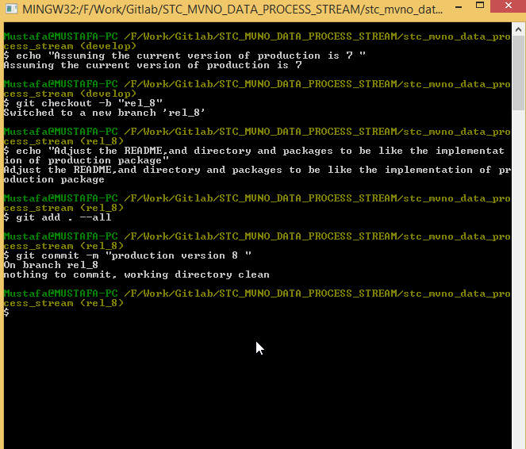

After finalizing the new features that will go to production ,and adjusting the packages convention and names
A release branch will be used to gather all this information to make the release similar to production then merge it and update
git checkout develop
git checkout -b rel_no

git push -u origin rel_no
git checkout master
git checkout master
git merge rel_no
git tag -a v8 -m 'Production version 8'
git push -u origin master
git push --tags
git checkout develop
git merge rel_no
git push -u origin develop